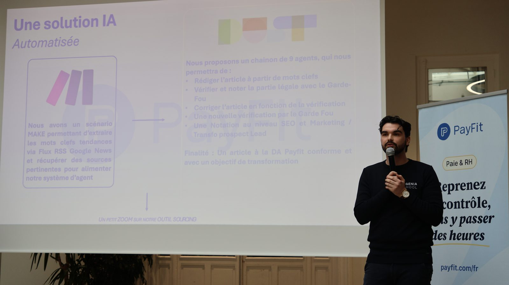
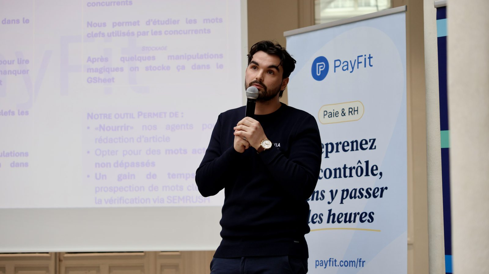
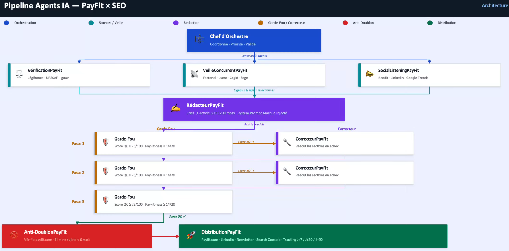
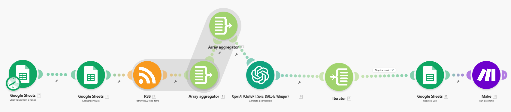
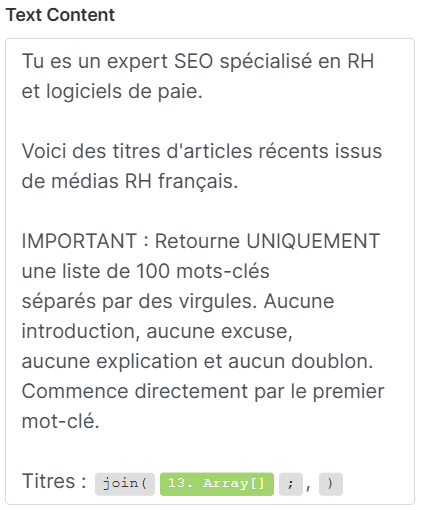
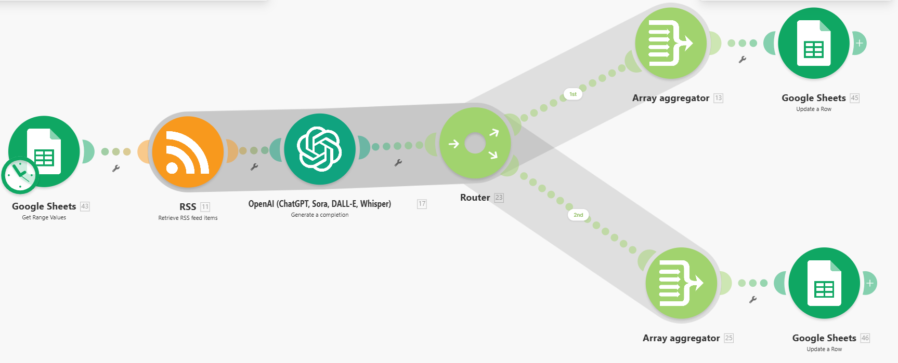
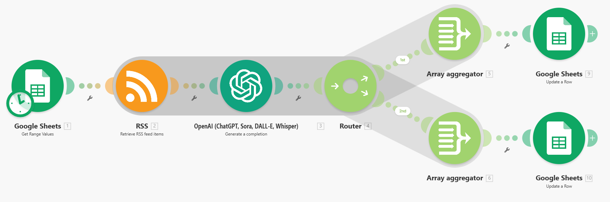

Système d'automatisation no-code pour Payfit — génération automatique de mots-clés SEO depuis l'actualité RH, extraction d'URLs par mot-clé, et veille concurrentielle (Factorial, Cegid, Sage). Piloté par 3 scénarios Make chaînés et des agents Dust.
🏆 Finaliste · Hackathon Payfit « Build the Future » · Mars 2026
Contexte
Objectif du projet
Dans le cadre d'une mission SEO pour Payfit — plateforme SaaS RH et paie — l'enjeu était d'identifier automatiquement les mots-clés émergeants dans l'actualité RH française et dans les contenus publiés par les concurrents directs.
Plutôt qu'une veille manuelle chronophage, j'ai conçu un système entièrement automatisé : les scénarios Make collectent l'actualité via Google News RSS, GPT-4o-mini extrait la sémantique, les agents Dust analysent et priorisent, et Google Sheets centralise les outputs pour l'équipe SEO.


Architecture
Agents Dust

Cliquer pour agrandir
Automatisation Make
3 scénarios chaînés
Les scénarios 1 et 2 sont chaînés : à la fin du Scénario 1, Make déclenche automatiquement le Scénario 2. Le Scénario 3 est indépendant.
① Génération mots-clés
② Extraction URLs
③ Veille concurrents

Analyse les titres d'articles publiés par 10 sources spécialisées RH, et demande à l'IA de générer une liste de 100 mots-clés tendance du secteur. Cette liste vient automatiquement remplacer les mots-clés utilisés par le Scénario 2, pour que la veille reste toujours à jour.
Sources RSS surveillées
culture-rh.com/feed
parlonsrh.com/feed
myrhline.com/feed
blog-rh.com/feed
Google News · logiciel paie SIRH France
Google News · droit travail réforme france
Google News · recrutement RH france
Google News · cotisations sociales paie France
Google News · gestion ressources humaines entreprise
Google News · SIRH logiciel RH entreprise France
Onglet « Requêtes » — Google Sheet Mots-clés Actualités
Cliquer pour agrandir · Liste des 10 sources + requêtes Google News utilisées en entrée du Scénario 1
Prompt GPT-4o-mini
System prompt

Modules
✕
Google Sheets — Clear Values
Efface l'ancienne liste de mots-clés (plage A2:U102) avant chaque run — garantit une page vierge sans mélange avec les données précédentes.
1
Google Sheets — Get Range Values
Lit la liste des 10 sources RSS depuis l'onglet "Requêtes" et les envoie une par une au module suivant.
2
RSS — Récupération des articles
Pour chaque source, lit le flux d'actualités et récupère les titres des 10 derniers articles.
3
Array Aggregator 1
Regroupe les titres collectés source par source en un premier bloc.
4
Array Aggregator 2
Fusionne tous les groupes en un seul bloc de 100 titres.
Pourquoi 2 aggregators ? Make traite les données source par source. Avec un seul aggregator, l'IA serait appelée 10 fois (une par source). Avec 2 aggregators, le second fusionne tout — l'IA est appelée une seule fois avec les 100 titres et génère 100 mots-clés en une passe.
5
OpenAI GPT-4o-mini — Génération 100 mots-clés
Envoie tous les titres à l'IA avec un prompt "expert SEO spécialisé RH". Retourne une liste de 100 mots-clés séparés par des virgules, sans doublon.
6
Iterator — Découpage
Découpe la chaîne de 100 mots-clés virgule par virgule pour les traiter un par un.
7
Filtre — Nettoyage
Vérifie que chaque mot-clé est non-vide avant l'écriture — élimine les éléments vides issus du découpage.
8
Google Sheets — Update a Cell
Écrit chaque mot-clé dans une cellule, ligne par ligne. À la fin : 100 mots-clés frais prêts pour le Scénario 2.
9
Make — Run a Scenario
Dernière étape : déclenche automatiquement le Scénario 2 dès que l'écriture est terminée.

Parcourt la liste des 100 mots-clés générée par le Scénario 1, recherche les 10 derniers articles Google News pour chacun, et enregistre dans le Google Sheet les URLs et les mots-clés extraits par IA de chaque titre.
Onglet « Mots clés Actualité » — Google Sheet Mots-clés Actualités
Cliquer pour agrandir · 100 mots-clés générés par run + 10 URLs + mots-clés extraits par article
Modules
1
Google Sheets — Get Range Values
Lit la liste des mots-clés dans l'onglet "Mots clés Actualité" et les envoie un par un au module suivant.
2
RSS Google News — Recherche par mot-clé
Pour chaque mot-clé, interroge Google News via son flux RSS (news.google.com/rss/search?q=…&hl=fr) et récupère les 10 articles les plus récents.
3
OpenAI GPT-4o-mini — Extraction mots-clés
Pour chaque article, envoie le titre à l'IA qui extrait 3 à 5 mots-clés pertinents. Prompt "expert RH" pour qualifier rapidement chaque article sans le lire.
4
Router — 2 routes parallèles
Sépare le flux en deux chemins : Route 1 → URLs des articles · Route 2 → mots-clés extraits.
5
Array Aggregator × 2
Un aggregator par route. Rassemble les 10 URLs (route 1) et les 10 sets de mots-clés (route 2) correspondant à un même mot-clé recherché.
6
Google Sheets — Update a Row × 2
Écrit les résultats sur la ligne du mot-clé correspondant. Résultat : chaque ligne contient le mot-clé + 10 URLs + mots-clés extraits de chacun.

Surveille les blogs de 3 concurrents directs de Payfit — Factorial, Cegid et Sage — et enregistre automatiquement leurs derniers articles et les mots-clés de leurs titres. Scénario indépendant, déclenché séparément.
Modules
1
Google Sheets — Get Range Values
Lit la liste des concurrents dans l'onglet "Veille" avec leur nom et l'URL de leur flux RSS (colonnes A:B).
2
RSS — Flux concurrents
Pour chaque concurrent (Factorial, Cegid, Sage), lit son flux RSS et récupère les 10 derniers articles publiés sur son blog.
3
OpenAI o4-mini — Extraction mots-clés
Pour chaque article, extrait les mots-clés pertinents depuis le titre. Permet de comprendre en un coup d'œil les sujets traités par chaque concurrent.